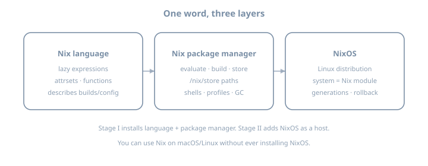
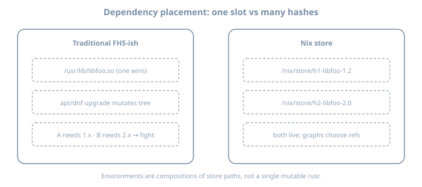

Why Nix exists
Why Nix exists
Goal: Separate the three meanings of “Nix,” understand the problem statement honestly, install the package manager with flakes + modern CLI, and evaluate first expressions in a REPL.
This chapter installs Nix language + package manager, not NixOS. The OS host arrives in the NixOS host part of this book.
On Fedora 44+: prefer the official distro package (sudo dnf install nix) and the full dual-stack bridge in Nix on Linux rather than only a generic upstream installer—SELinux and /nix integration are why Fedora packaged it.
Why this chapter matters
People fail Nix for social reasons as much as technical ones: they read a blog that mixes language, CLI, and NixOS modules, then paste commands from three eras of tooling. Theory first reduces that thrash.
Ops motivation: every later skill—closures, flakes, rebuilds, deployments—assumes you know what problem Nix claims to solve and what it deliberately does not. Without that frame you will treat Nix as “yet another package manager with weird paths” and fight the model.
Theory 1 — Three faces of the same ecosystem

| Layer | Question it answers | You touch it in this chapter? |
|---|---|---|
| Language | How do we describe packages and configs? | Yes — REPL |
| Package manager | How do we build/store/compose software? | Yes — install + nix run |
| NixOS | How do we describe an entire OS? | No — host part later |
Analogy (imperfect but useful)
| Idea | Rough analogy |
|---|---|
| Nix expression | A pure function recipe |
| Derivation | A build plan (inputs → output path) |
| Store path | The baked loaf with a serial number |
| Profile / shell | A lunch tray pointing at selected loaves |
| NixOS system | The whole kitchen layout as code |
Analogies break; the table is orientation, not law.
Naming traps in the wild
| Someone says… | They might mean… |
|---|---|
| “Install Nix” | Package manager only |
| “Install NixOS” | Full Linux distribution |
| “Write some Nix” | Language expressions |
| “Nix config” | Could be any of the three |
When reading docs, force yourself to label which face is speaking.
Theory 2 — Failure modes of traditional systems
Dependency hell
Classic package managers often assume one version of a library in a global prefix (/usr/lib/...). Applications A and B that need different versions conflict.
Example story
- App A needs
libssl.so.1.1
- App B needs
libssl.so.3
- Distro upgrade breaks A, or pinning freezes security updates for B
Snowflake servers
Imperative drift:
ssh prod
apt install foo
vim /etc/foo.conf
# six months later: nobody knows the full storyLanguage-level global installs
pip install --user something
npm install -g other
cargo install anotherEach ecosystem invents isolation. None composes cleanly with the others or with the OS.
CI “works on my machine” graphs
| Symptom | Typical cause |
|---|---|
| Green CI, red laptop | Different tool versions |
| Green laptop, red prod | Hidden system libraries |
| Two developers disagree | Floating “latest” pins |
Nix’s bet is: make the graph explicit and hashed, then share it.
What “reproducible” can mean (honesty ladder)
| Claim | Strength |
|---|---|
| “Same machine rebuilds the same store paths” | Often achievable with locks |
| “Same flake lock on two Linux machines → same paths” | Common with pure fixed-output inputs |
| “Bit-for-bit identical across OS/CPU forever” | Strong; not always true |
| “My data is reproducible” | Not Nix’s job unless you design state |
Nix optimizes for controlled, rebuildable software graphs. It does not delete ops.
Theory 3 — Nix’s core bet: pure builds + hashed store

Content-addressed intuition
If a build is a function of its inputs, then informally:
output path = f(build recipe, input paths, system, …)
In the common input-addressed world, the hash reflects the derivation inputs. (Content-addressed derivations are an advanced evolution—see the Internals part of this book.)
Coexistence
/nix/store/hAAAAA-libfoo-1.2.3
/nix/store/hBBBBB-libfoo-2.0.0Both can exist. Package A references hAAAAA; package B references hBBBBB. No single /usr/lib/libfoo.so gladiator match.
Environments as compositions
A “shell” or “profile” is not a pile of files dumped into /usr. It is a set of store paths arranged on PATH, LIB, etc.
Example mental model
devShell = { go_1_26, git, hello }
→ PATH entries under those store pathsWhat purity buys operations
| Property | Operational win |
|---|---|
| Immutable store paths | Roll forward/back by re-pointing roots |
| Explicit references | Copy a complete closure to another host |
| Sandboxed builds | Fewer “works on my machine” build deps |
| Binary caches | Realize often means download, not compile |
Theory 4 — Evaluation vs realization

| Phase | What happens | Failure examples |
|---|---|---|
| Evaluate | Nix language runs; produces derivation plans | Infinite recursion, missing attr, type errors |
| Realize | Build or download outputs into the store | Compile error, hash mismatch, network/cache miss |
Substituters (binary caches)
If a trusted cache already has the output path, realization becomes download, not compile. That is why first nix run nixpkgs#hello can be fast or slow depending on cache/network.
Example
eval: nixpkgs.hello → derivation → planned out path P
realize: P exists on cache.nixos.org? download : buildWhy the split matters for debugging
| You see… | Likely phase |
|---|---|
error: undefined variable |
Evaluate |
error: attribute 'foo' missing |
Evaluate |
builder failed with exit code |
Realize |
hash mismatch in fixed-output |
Realize (fetcher) |
| Long silence then download progress | Realize via substituter |
Theory 5 — Installer shapes and multi-user daemon
| Shape | Idea |
|---|---|
| Multi-user + nix-daemon | Builds run as daemon; shared store; recommended default |
| Single-user | Store owned by your user; simpler, less isolation |
| Determinate installer | UX wrapper; still Nix—record that you used it |
Why a daemon?
Sandbox builds need privileges to set up namespaces/mounts cleanly. Multi-user installs also protect the store from accidental mutation.
Config locations (theory)
| File | Role |
|---|---|
~/.config/nix/nix.conf |
User Nix settings |
/etc/nix/nix.conf |
System-wide (multi-user) |
Experimental features (nix-command, flakes) must be visible to the Nix that actually runs.
Disk and trust
Leave tens of GB free. The store grows with every experiment. Trust binary caches only when signatures match configured public keys—random HTTP mirrors are not enough.
Theory 6 — Flakes as the modern pinning model (preview)
You enable flakes in this chapter; deep flake authoring is the Flakes and project devShells chapter.
| Concept | Meaning |
|---|---|
flake.nix |
Declarative inputs + outputs |
flake.lock |
Pinned revisions/hashes of inputs |
nixpkgs#hello |
Indirect flake reference to package hello |
Contrast with channels
| Channels | Flakes |
|---|---|
| Mutable “what is nixpkgs today?” | Lock file pins exactly |
NIX_PATH / <nixpkgs> |
Explicit inputs |
| Easy to drift | Designed for collaboration |
This book: flakes default, channels as literacy only (classic CLI chapter).
Baseline pin you will reuse
inputs.nixpkgs.url = "github:NixOS/nixpkgs/nixos-26.05";Theory 7 — CLI eras (so docs don’t gaslight you)
| Era | Examples | Status in this book |
|---|---|---|
| Classic | nix-env, nix-build, nix-shell |
Literacy later (classic CLI chapter) |
| Modern | nix build, nix run, nix develop, nix flake |
Default |
Same underlying store; different UX and defaults. Prefer modern unless you are translating an old post.
Theory 8 — What Nix is not
| Myth | Reality |
|---|---|
| “Nix replaces backups” | State (/var, DBs) needs its own policy |
| “Nix encrypts secrets” | Store is often world-readable; secrets need tools later |
| “One hash forever everywhere” | OS/CPU/impure inputs still matter |
| “No ops needed” | You still design networks, access, upgrades |
Honesty keeps adoption durable.
Worked examples
Example A — “Install” without polluting a global profile
nix run nixpkgs#helloRuns hello from a realized store path without committing to a permanent user profile.
Example B — Why two machines diverge without locks
Machine A: nixpkgs as of Monday
Machine B: nixpkgs as of Friday
→ different hashes for "hello", different closuresFlake locks exist to end that story.
Example C — What Nix does not do
Declarative Postgres service ≠ automatic migration of your prod data
Encrypted secrets in git ≠ “Nix encrypts the store”Example D — Eval error vs build error (feel the phases)
# Eval failure (missing attribute) — no build starts
nix eval --expr 'let pkgs = {}; in pkgs.doesNotExist'
# Realization path for a known package (may download)
nix build nixpkgs#hello --print-out-pathsExample E — Minimal REPL tour
nix repl1 + 1
{ a = 1; b = "x"; }.a
builtins.typeOf { x = 1; }
builtins.typeOf (x: x + 1)Example F — Inspect config after enabling features
nix config show | grep -i experimental
nix --versionLab 1 — Install Nix
Use current docs: https://nixos.org/download/
Or Determinate installer if you choose—write which.
# new shell after install
nix --versionDisk: leave tens of GB free for later chapters and parts.
Record in notes:
- Installer name/version
- Multi-user or single-user
- OS and CPU (
uname -m)
Lab 2 — Enable modern features
~/.config/nix/nix.conf (or system nix.conf if that is what your install uses):
experimental-features = nix-command flakesVerify:
nix config show | grep -i experimental
nix flake --help | headIf settings do not apply, check whether the daemon needs a restart and whether user vs system config is the one being read.
Lab 3 — First modern commands
nix search nixpkgs hello | head
nix run nixpkgs#helloREPL
nix repl1 + 1
{ a = 1; b = "x"; }.a
builtins.typeOf { x = 1; }Load nixpkgs when available (:lf nixpkgs or version-appropriate equivalent) and inspect pkgs.hello.
Lab 4 — Write the model
In your journal, answer without looking up:
- Language vs PM vs OS—one sentence each
- Why two
libfooversions can coexist
- Eval failure vs build failure—one example each
- Which installer you used
Exercises
- Draw the three faces of Nix from memory; check against the diagram.
- Name three traditional failure modes Nix targets and one it does not.
- Run
nix run nixpkgs#hellotwice; note whether the second is faster (cache).
- Force an eval error and a realize-related error; label each.
- Locate which
nix.confyour install actually reads; quote the path.
- Enable flakes only in user config vs system config—document which worked.
- Compare
nix --versionwith a teammate; note drift risk without locks.
- Write a 5-line “why Nix” pitch for a skeptic who loves apt.
- List five blog phrases that mix language/PM/OS; rewrite them precisely.
- Create
~/lab/nixos-book/concepts/why-nix/NOTES.mdwith installer + baseline.
- Run
nix repland evaluate nested attrsets until muscle memory sticks.
- Explain input-addressed hashing in one paragraph without the word “magic.”
Common pitfalls
| Symptom | Theory link |
|---|---|
nix not found |
Install/PATH; shell not reloaded |
| experimental feature errors | nix.conf not read by that Nix |
| Slow first command | Cold substituter / eval of nixpkgs |
| Permission errors | Single vs multi-user mismatch |
Old blog uses only nix-env -i |
Classic era; map later |
| “Nix broke my OS” after PM install | You installed PM, not NixOS—different surface |
| Expecting data reproducibility | Wrong layer of the honesty ladder |
| Mixing three installers | Record and stick to one story |
Checkpoint
- Can explain three faces of Nix
- Can state two problems Nix targets and two it does not
nix run nixpkgs#helloworks
- Flakes + nix-command enabled
- REPL evaluated an attrset
- Installer name recorded
- Eval vs realize distinction written in own words
Further depth (this book)
| Topic | Chapter / part |
|---|---|
| Store paths, closures, GC roots | The Nix store and closures |
| Language data model | Nix language: values and attrsets |
| Flake authoring | Flakes and project devShells |
| Classic CLI translation | Classic CLI literacy |
| Full OS as modules | Part NixOS host |
| Content-addressed derivations | Part Internals |